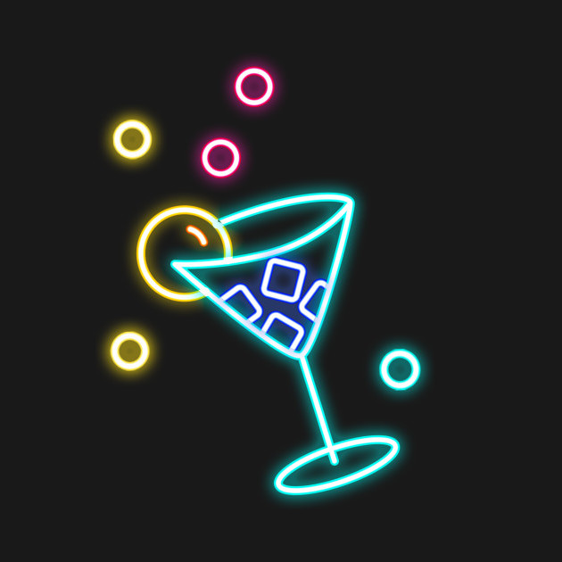
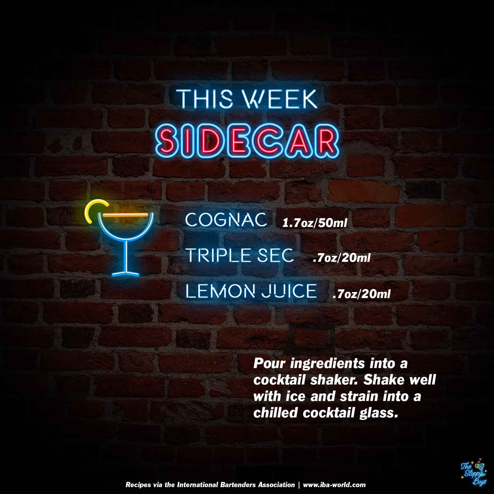

Sloppy Drinks
Podcast
About

Sidecar
Ingredients
Cognac (1.7oz/50ml)
Triple Sec (.7oz/20ml)
Lemon Juice (.7oz/20ml)
Steps
Pour ingredients into a cocktail shaker.
Shake well with ice and strain into a chilled cocktail glass.
Notes
Episode 48 - Sidecar (September 17, 2021)
IBA Sidecar Recipe
Artwork by The Sloppy Boys